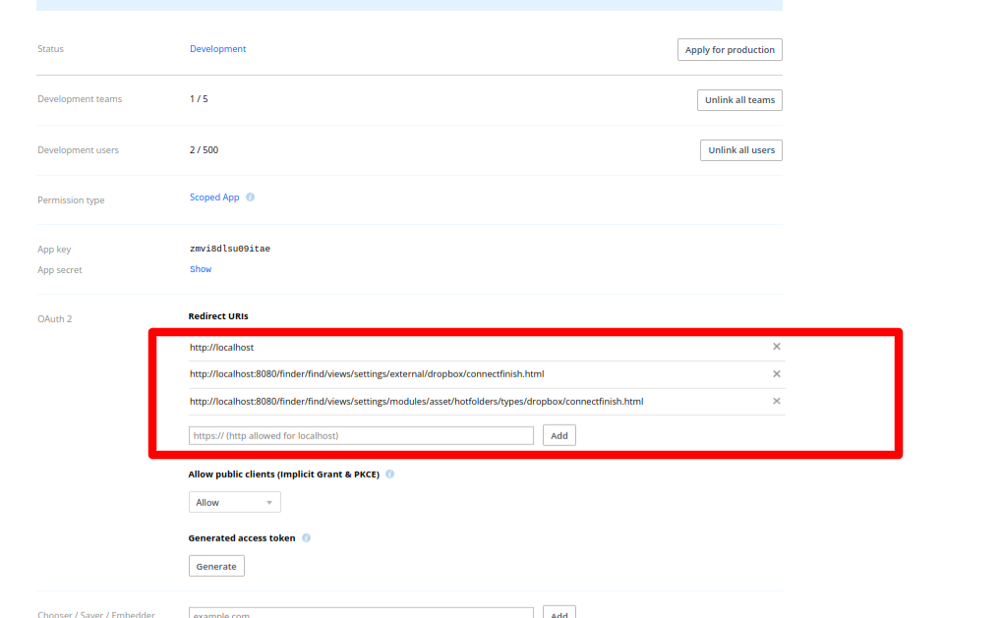
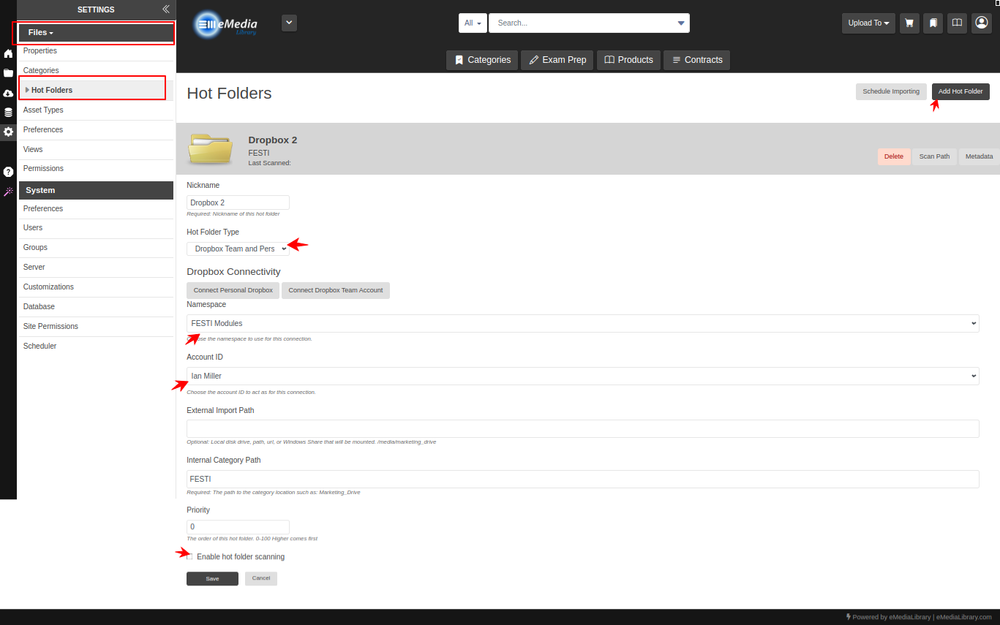

Navigate to the OAuth 2 section in the app settings.
Add your app's redirect URI(s) under the Redirect URIs field.
Ensure the redirect URI(s) match exactly with the URI your app will use for authentication, including the protocol (e.g., https://).
URI: $siteroot/$context.findValue("redirecturi")
Save your changes.

Step 3: Setting Up Permissions
In the app's settings, navigate to the Permissions tab.
Select the specific permissions (scopes) required by your app. The image shows the minimum
for syncing files from DropBox to EnterMedia however you may want to select more for future use.
Save your changes.
If you encounter any issues during the app setup process, consult the Dropbox API Documentation or reach out to Dropbox Support.
Dropbox Hotfolder Setup
Once your app is connected you can add hotfolders to sync content to EnterMedia.
First use the Connect Dropbox or Connect Dropbox Team links to connnect your personal or business account to dropbox. Follow the prompts in dropbox and allow the connection
For team accounts you need to sekect the root folder/namespace you want to sync. You can create more than one hotfolder if you need to sync multiple folders.
Select the "User" you want to act on behalf of. This is normally yourself or an administrator account.
Specify the folder root in EnterMedia you want the files to appear under.
Enable the hotfolder
Hotfolder assets will begin to appear during subsequent syncing. If you encounter any issues during the hotfolder setup process, reach out to EnterMedia Support.

#if($candevelop)
Code is mostly in DropboxManager and DropboxAssetSource - it's only really a downloader right now, will not handle deletion or uploading to dropbox yet.
I haven't tested a soley user end user account but it should work
#end